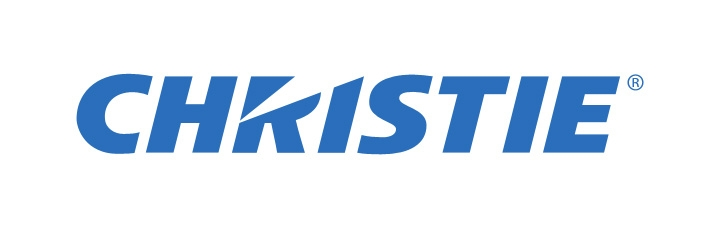
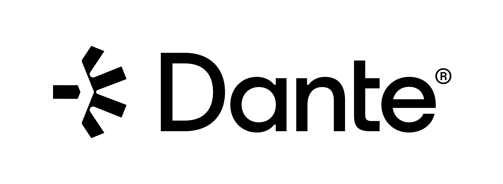
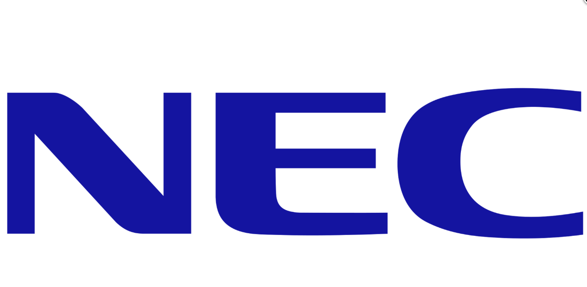

Projection & laser
Installation, alignment, service diagnostics and preventive maintenance across Barco, Christie and NEC digital cinema platforms.
DIGITAL CINEMA ENGINEERING / TECHNICAL LEADERSHIP
Manager – Sound & Projection · PVR INOX
Digital cinema engineering since 2011 — from laser projection and sound systems to regional technical operations. Now applying that field experience to cinema-focused AI and automation.
View printable professional profileTWO SIDES OF THE SAME EXPERTISE
Explore the work behind reliable cinema operations — or the independent tools I'm developing to support engineers.
01 / WHAT I DO
From the optical path to the audio chain, I work across the systems that keep cinema presentations dependable.
Installation, alignment, service diagnostics and preventive maintenance across Barco, Christie and NEC digital cinema platforms.
Dolby processors, playback servers, amplifier signal chains, auditorium automation cues and fault isolation.
Multi-site incident response, preventive maintenance, technical escalation, OEM coordination and engineer support.
02 / ENGINEERING PRACTICE
How I approach installation, fault isolation and reliable show operations. Representative workflows, not client case reports.
INSTALLATION / COMMISSIONING
Projector positioning and alignment, flat/scope format checks, 3D integration and controlled server playback verification during commissioning.
ENGINEERING FLOW: Install → Align → Validate
DIAGNOSTICS / MAINTENANCE
Systematic troubleshooting across the optical path, cooling and power interlocks, cinema server playback, DCP/KDM handling and image quality.
ENGINEERING FLOW: Observe → Isolate → Verify
SOUND / SHOW CONTROL
Audio processor configuration, amplifier signal-chain checks, automation cues and show-control verification for dependable presentations.
ENGINEERING FLOW: Configure → Test → Handover
These are representative engineering workflows, not named-client case studies or claims of measured outcomes. Site-specific operational information remains confidential.
03 / OEM CREDENTIALS & TRAINING
OEM service certifications first, followed by clearly identified additional AV and networked-systems training.
Barco
Barco
Barco
Christie Digital Systems · Projector & lamp safety; RealLaser/CineLife safety and light-source training

TRAINING BRANDTRAININGEXTENDED AV TRAINING / NETWORKED SYSTEMS
Complementing cinema engineering with AV-over-IP, networked audio and installation training. Learning-stage topics are identified separately from OEM service certifications.

Networked audio fundamentals
Introduction to Q-SYS cinema audio systems

NC1202 / NC1402 models
AV-over-IP basics; further networking study in progress
FIELD & AV SYSTEMS
Color calibration · DCI-oriented operational checks · audio/video signal flow · cinema servers · commissioning · vendor coordination.
CURRENT LEARNING
AV-over-IP, IP networking, multicast fundamentals and network-based audio/video routing — developing proficiency, not advanced certification claims.
Education: Diploma in Computer Hardware & Networking, IHT Moradabad (2010).
Logos identify employers and OEM training or certification brands; they are not digital verification seals or endorsements.
04 / PROFESSIONAL EXPERIENCE
A technical career built in digital cinema support, service and regional operations since 2011.
26 DEC 2024 — PRESENT
PVR INOX Limited · Rajasthan Region
Regional oversight of digital cinema projection and sound across multi-screen operations, with preventive maintenance, incident response, team training, system upgrades and OEM/RMA coordination.
MAY 2023 — DEC 2024
Qube Cinema Technologies (Real Image)
Coordinated regional technical services, field engineers, technical escalations and cinema support operations.
JUL 2015 — APR 2023
Qube Cinema Technologies (Real Image)
Provided senior-level technical support, troubleshooting, installations and maintenance of digital cinema systems.
JUL 2011 — JUN 2015
Qube Cinema Technologies (Real Image)
Started my career in digital cinema engineering, supporting installations, field service and projector and server maintenance.
05 / CINEMA AI & INNOVATION
I'm combining field engineering experience with applied AI, knowledge retrieval and practical workflow automation to support more consistent technical decisions.
INDEPENDENT DIGITAL CINEMA INTELLIGENCE
An independently developed, cinema-focused AI diagnostic system designed to help engineers investigate equipment failures using technical logs, curated service knowledge and evidence-based troubleshooting.
The goal is a specialized engineering system: identify the exact equipment and symptoms, retrieve model-relevant information, distinguish observed facts from possible causes, and suggest checks that a qualified engineer can validate. It is designed to improve through verified field outcomes and approved knowledge updates—not by accepting unverified answers as truth.
REGIONAL PROJECTOR PREVENTIVE MAINTENANCE
A region-focused automation initiative to organize projector preventive-maintenance information and develop richer, more consistent engineer-reviewed PPM reports.
The existing workflow foundation supports site-oriented status and review of verified maintenance records. The next reporting layer aims to turn approved field observations into clear maintenance summaries, findings, corrective-action records and follow-up recommendations—without inventing measurements or bypassing engineer approval.
These are evolving technical initiatives. Descriptions distinguish existing components from planned capabilities. No confidential cinema logs, site records or unpublished service documents are shared here.
06 / CONTACT
Open to conversations about digital cinema technology, field engineering, technical leadership and international opportunities.
mukesh.projection@gmail.com
Additional CV contact: mukesh0792@outlook.com